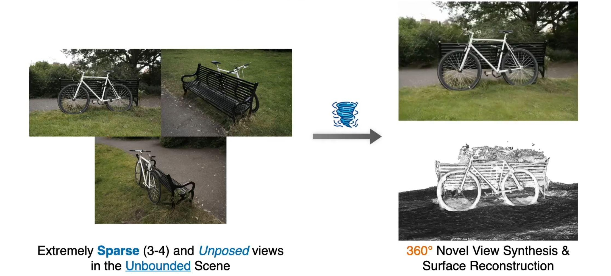

Zhaopeng Cui
Research Professor, College of Computer Science and Technology, Zhejiang University
I am a Research Professor at Zhejiang University, affiliated with the College of Computer Science and Technology and the State Key Laboratory of CAD&CG. My research lies at the intersection of computer vision, computer graphics, robotics, and machine learning.
My group works on 3D reconstruction, scene understanding, neural scene representations, SLAM, and physically grounded spatial perception. More broadly, I am interested in building systems that enable machines to perceive, reconstruct, and reason about the physical world at scale.
Before joining Zhejiang University, I was a Senior Researcher working with Prof. Marc Pollefeys at ETH Zurich. I received my Ph.D. in Computer Science from Simon Fraser University under the supervision of Prof. Ping Tan.
Research
My research lies at the intersection of computer vision, computer graphics, robotics, and machine learning. I am broadly interested in enabling machines to perceive, reconstruct, understand, and interact with the physical world through visual data.
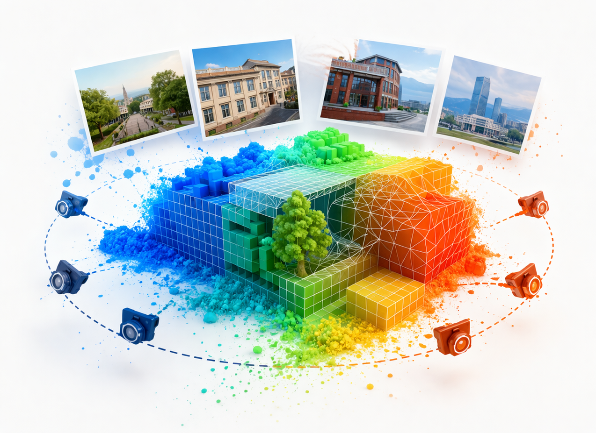
3D Reconstruction
We study visual reconstruction methods that recover geometry, appearance, and structure of real-world scenes from sparse, incomplete, or casually captured observations, with an emphasis on scalable representations and editable modeling.
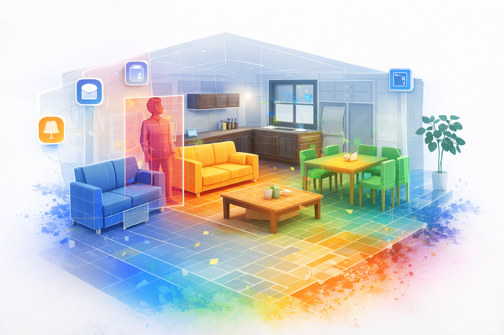
3D Scene Understanding
We aim to build holistic scene understanding systems that jointly reason about objects, layouts, occlusions, semantics, and spatial relations, bridging perception and structured 3D understanding in complex environments.
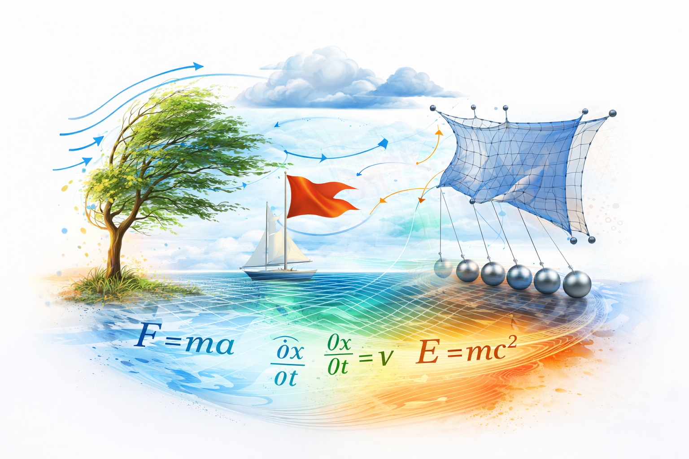
Physical-informed Modeling
We explore how physical principles can be integrated into visual modeling and generation, enabling scene representations that are not only geometrically plausible, but also predictive, controllable, and consistent with real-world dynamics.
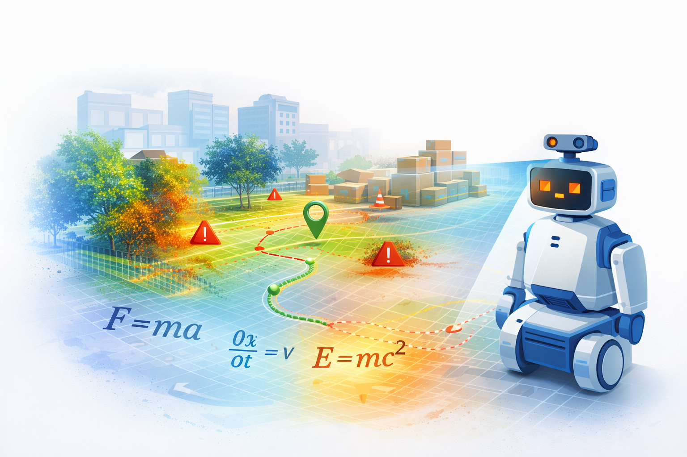
Robot Perception and Planning
We investigate embodied perception systems for localization, mapping, and motion planning, with the goal of connecting 3D scene representations to robust decision-making and interaction in real environments.
Selected Publications
Representative publications organized by research directions.
3D Reconstruction
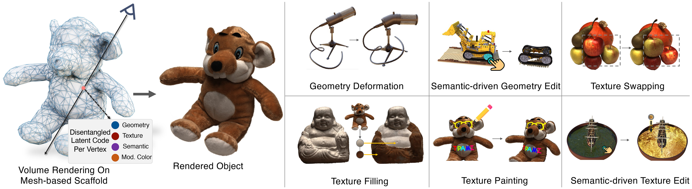
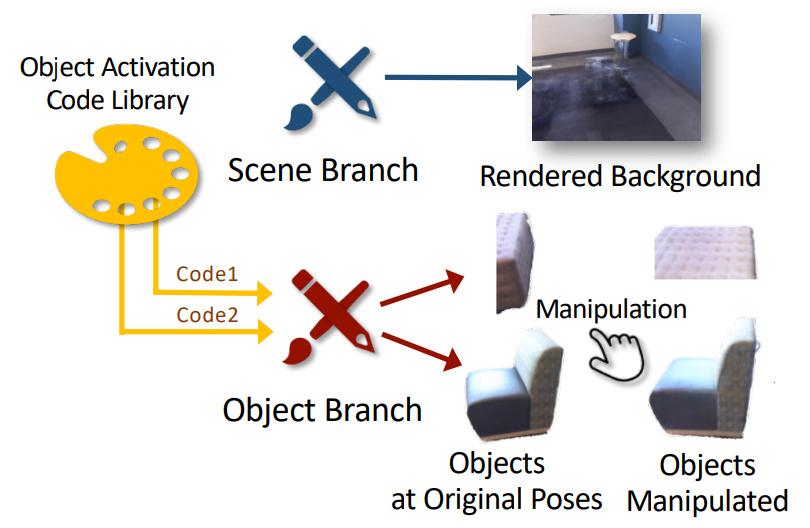
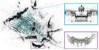
Global Structure-from-Motion by Similarity Averaging
A global structure-from-motion method based on similarity averaging for robust and scalable camera pose estimation.
3D Scene Understanding
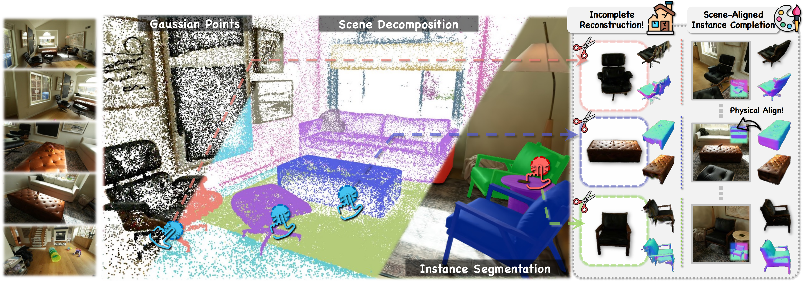
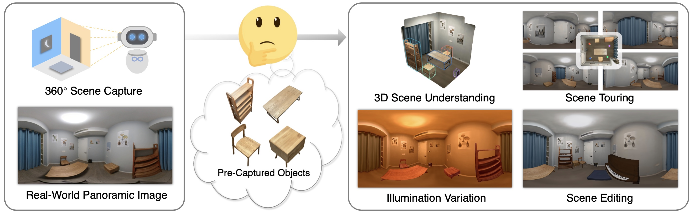
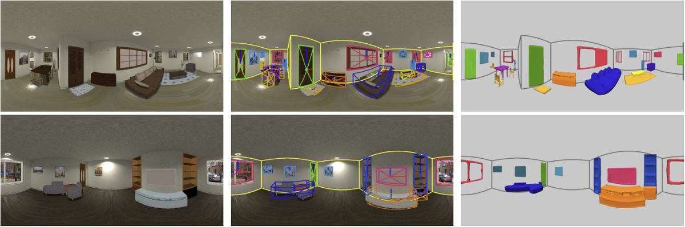
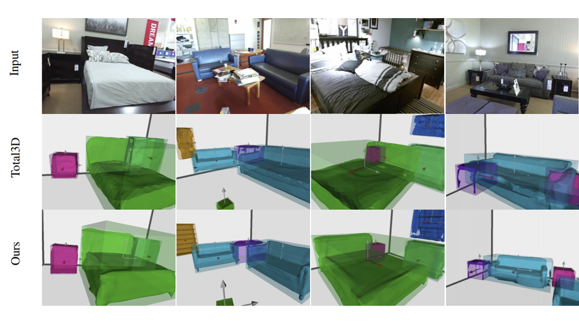
Physical-informed Modeling
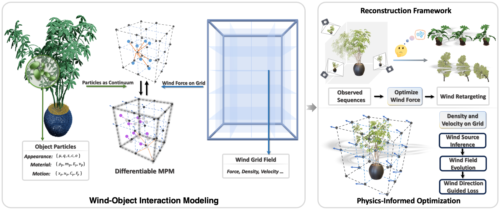
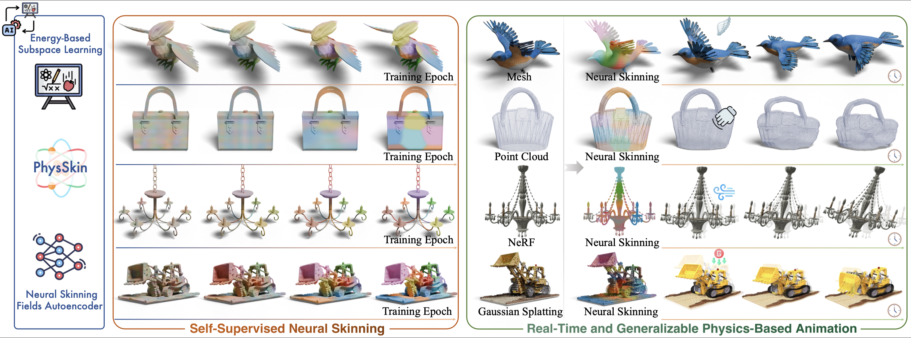
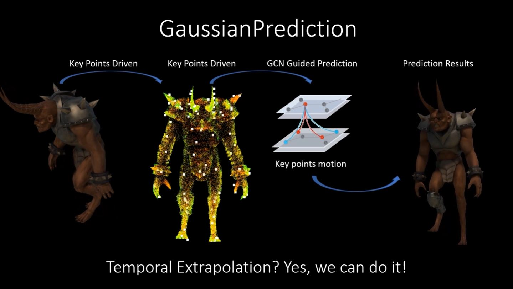
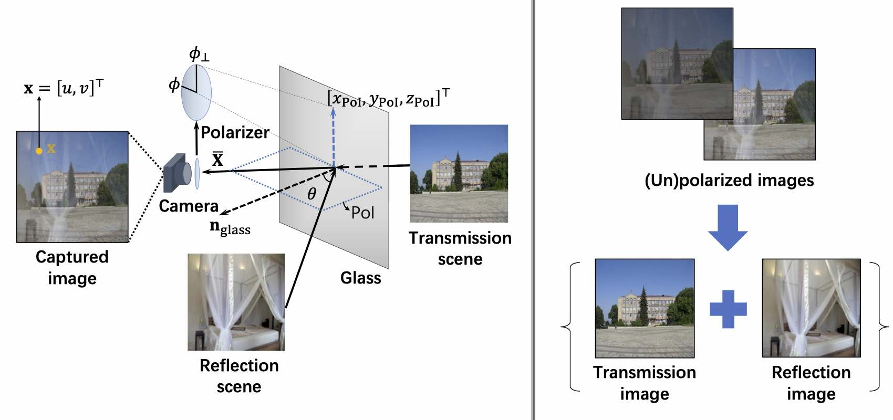
Physics-Guided Reflection Separation From a Pair of Unpolarized and Polarized Images
A physics-guided method for separating reflection using polarization cues from paired unpolarized and polarized images.
Robot Perception and Planning
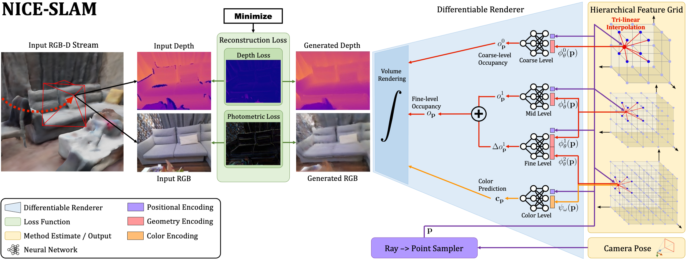
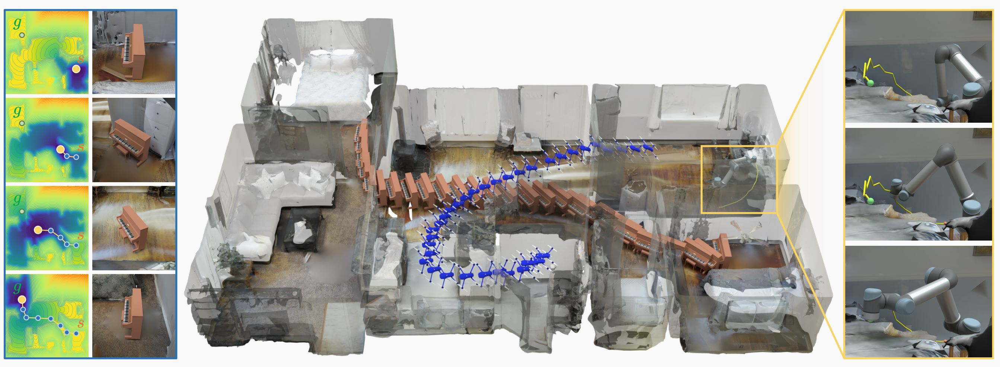
PC-Planner: Physics-Constrained Self-Supervised Learning for Robust Neural Motion Planning with Shape-Aware Distance Function
A physics-constrained neural motion planning method with shape-aware distance fields for robust planning in complex environments.
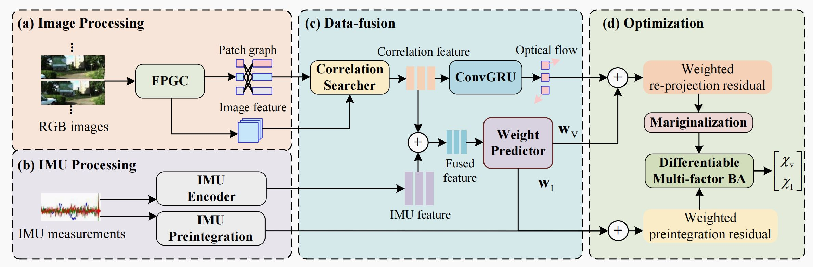
DW-VIO: Deep Weighted Visual-Inertial Odometry
A deep visual-inertial odometry framework with learned weighting for robust state estimation.
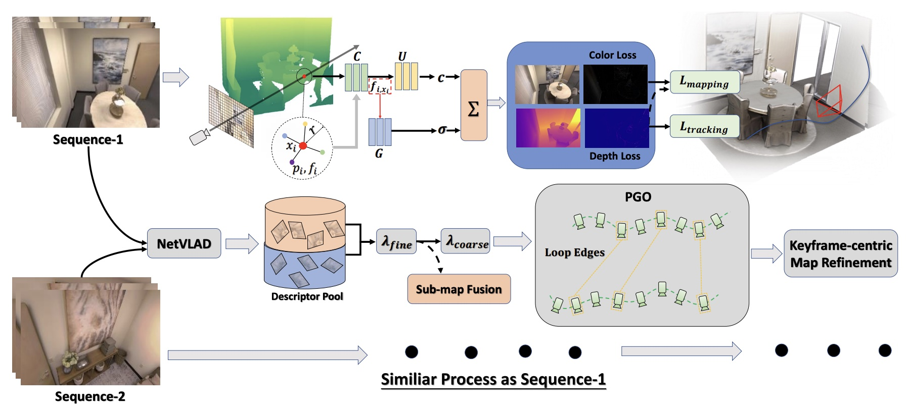
News
Recent updates on papers, awards, service, and activities.
2026.03
Will be serving as Program Chair for 3DV 2028.
2026.02
Three papers accepted to CVPR 2026.
2026.01
One paper accepted to ICLR 2026.
2025.07
Five papers accepted to ICCV 2025.
2024.03
NICER-SLAM received the 3DV 2024 Best Paper Award Honorable Mention.
Awards, Service & Academic Activities
Selected Awards
- 3DV 2024 Best Paper Award Honorable Mention
- IROS 2021 Best Paper Award Finalist on Safety, Security, and Rescue Robotics in memory of Motohiro Kisoi
- ICRA 2020 Best Paper Award Finalist on Robot Vision
Professional Service
- Associate Editor for Pattern Recognition, IEEE RA-L
- Area Chair for CVPR, ECCV, IJCAI, 3DV
- Associate Editor for ICRA, IROS
Openings
I am always looking for highly motivated Ph.D. students, research interns, and visiting students interested in 3D vision, embodied AI, scene understanding, SLAM, and physics-informed scene modeling. Please email me with your CV, transcript, and a short description of your research interests.